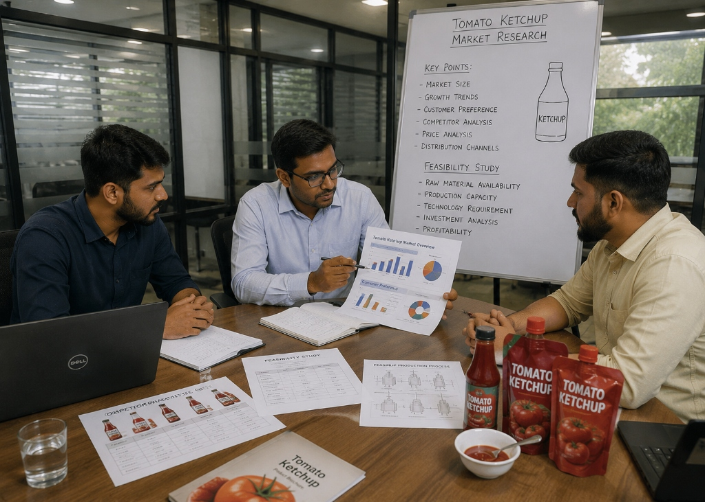
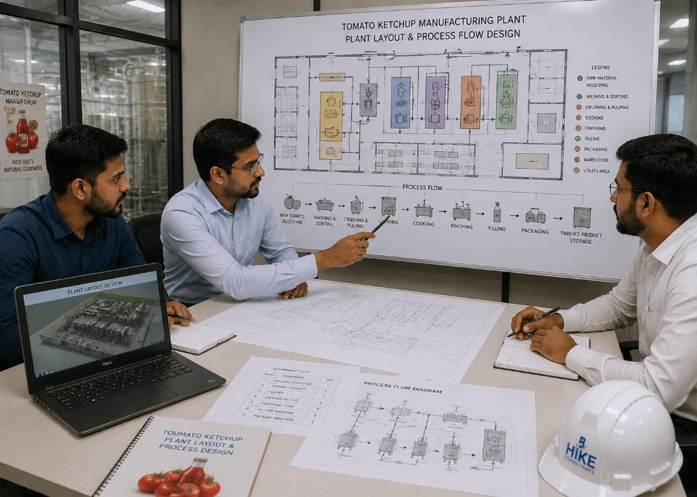
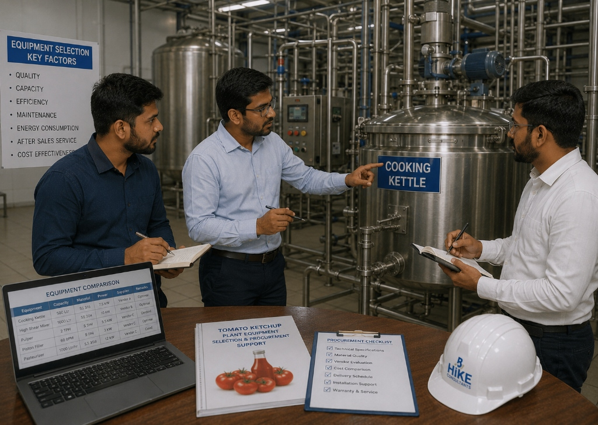
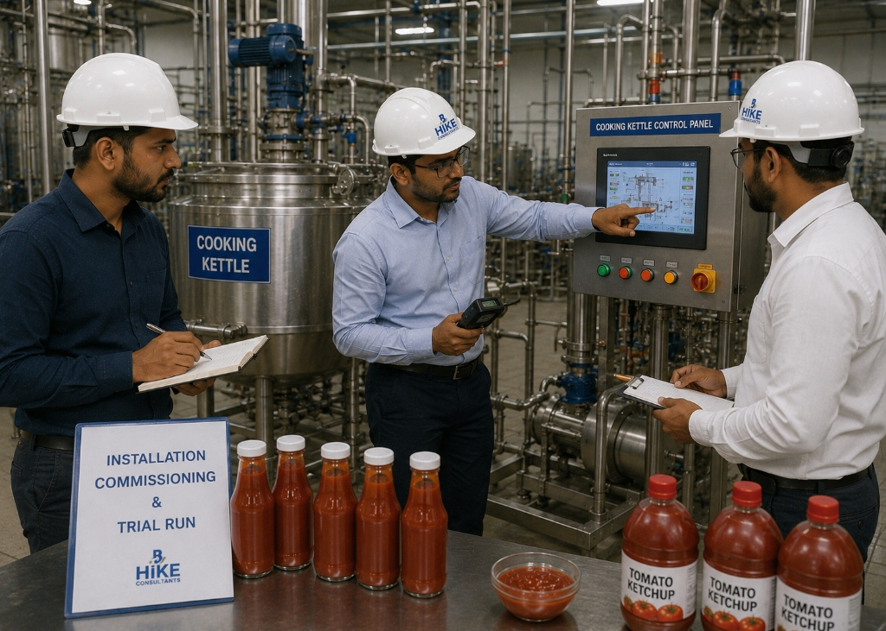
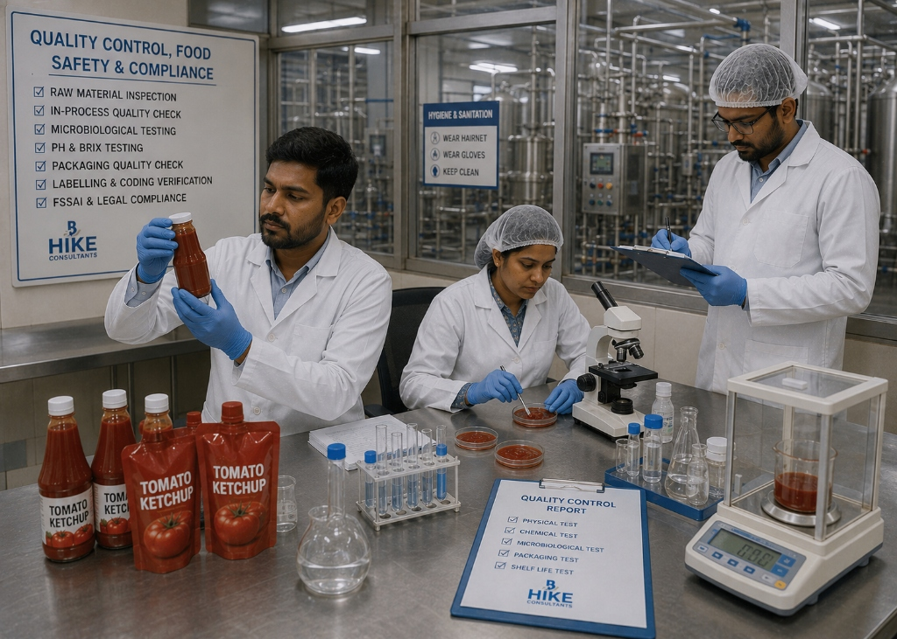
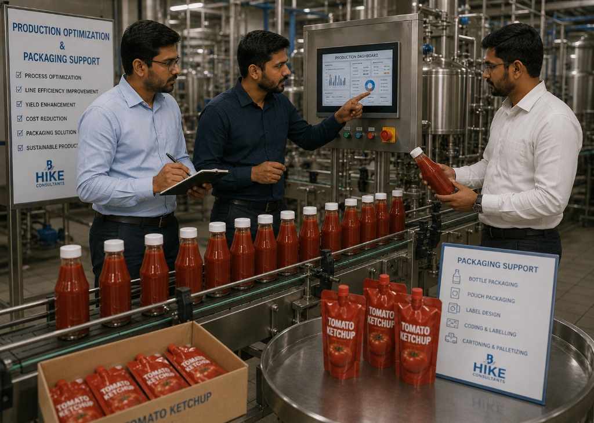

Tomato Ketchup Manufacturing Plant Consultancy
Expert consultancy solutions for tomato ketchup manufacturing plants, covering project planning, process design, equipment selection, installation support, quality control systems, and production efficiency improvement.
Complete Tomato Ketchup Plant Consultancy Solution
Hike provides end-to-end consultancy for Tomato Ketchup Manufacturing Plant projects. Tomato ketchup is one of India's most consumed condiments with a massive ₹3000+ crore market that continues to grow. We assist food entrepreneurs, sauce manufacturers, and FMCG brands with feasibility studies, ketchup formulation guidance, tomato processing plant setup, hot-fill and retort packaging solutions, brand development, and competitive retail and food service market entry strategies.
Business Planning
Market analysis, investment planning, and project reports for ketchup manufacturing.
Formulation & Process Design
Ketchup recipe standardization, cooking, blending, homogenization, and pasteurization process design.
FSSAI Compliance
Tomato content standards, preservative limits, label compliance, and food safety systems.
Brand & Market Strategy
Retail brand positioning, private label opportunities, and distribution channel development.

Consultancy Workflow
A streamlined consultancy workflow designed to help you build a premium tomato ketchup brand with consistent quality, competitive pricing, and strong market presence.
Our Expertise
Business Feasibility Study
Market sizing, competition analysis, investment planning, and profit projections for ketchup manufacturing.

Ketchup Formulation
Standardized recipes for regular, low-sugar, organic, and spicy ketchup variants with consistent flavor profiles.

Plant Layout & Equipment
Tomato pulping, cooking kettles, homogenizers, pasteurizers, filling, capping, and labeling line design.

FSSAI Compliance
FSSAI standards for ketchup (minimum 25% tomato solids), permissible preservatives, and label compliance.

Packaging Technology
Glass bottle, PET bottle, sachet, pouch, and institutional pack solutions with hot-fill and aseptic options.

Retail & Private Label Strategy
Brand building, retail listing, e-commerce launch, and private label manufacturing for established brands.
Frequently Asked Questions
Common queries about our tomato ketchup manufacturing plant consultancy.
As per FSSAI (Food Safety and Standards (Food Products Standards and Food Additives) Regulations), tomato ketchup must contain a minimum of 25% tomato soluble solids (by weight of the final product) and must meet specific requirements for preservatives, color, and other additives. We guide you through all regulatory requirements to ensure compliant labeling.
Yes, most commercial ketchup manufacturers use tomato paste concentrate (28-30° Brix) as it is available year-round, has lower transportation costs, and enables consistent product quality. We guide you on reconstitution ratios, sourcing strategies, and quality parameters for concentrate-based production.
Hot-fill involves filling ketchup at high temperature (85°C+) into glass or PET containers, achieving shelf stability through thermal processing. Aseptic packaging sterilizes product and packaging separately, enabling ambient storage without preservatives. Hot-fill is simpler and lower cost; aseptic enables premium positioning. We help you choose the right technology based on your target market and budget.
Competitive strategies include targeting underserved regional markets, focusing on organic or no-preservative variants, private label manufacturing for retail chains, institutional supply to restaurants and hotels, or developing unique flavor variants. We provide competitive intelligence and differentiation strategies specific to your target market.
A ketchup plant can easily produce tomato sauce, chilli sauce, BBQ sauce, pizza sauce, pasta sauce, and other condiments by modifying the formulation. We help you plan a multi-product portfolio to maximize equipment utilization and revenue diversification from day one.
Plant Gallery
Why Choose Hike Consultancy
Condiment Industry Expertise
Deep knowledge in tomato processing and ketchup/sauce manufacturing processes.
FMCG Brand Strategy
Guidance on competitive positioning, brand building, and retail distribution strategies.
Startup-Friendly Guidance
End-to-end support for new ketchup brands from recipe development to market launch.
Regulatory Knowledge
FSSAI ketchup standards, label regulations, preservative limits, and GMP compliance.
Implementation Support
Hands-on support from formulation trials to plant commissioning and commercial production.
Long-Term Partnership
Ongoing support for product range expansion, export market entry, and capacity scaling.
Ready to Build Your Tomato Ketchup Manufacturing Business?
Connect with Hike's consultancy experts and get professional guidance for planning, launching, and scaling your tomato ketchup manufacturing plant.